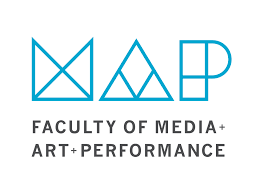

Lynn-Developer
Image source
Summary
I recently graduated from the University of Regina with a Bachelor in MAP with a concentration in Creative Technologies.
Education
Creative Tech University of Regina (2017-2023)
Work Experience
- Team Member at McDonald's Restaurant (July 2019- April 2021)
- Environmental Service Worker with Saskatchewan Health Authority (May 2021-present)
Skills
- Team player
- Time management
- Communication
- Ability to work under pressure
Achievements
- Customer Service training
Contact Me